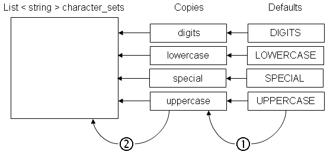
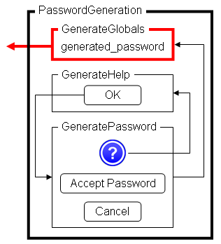
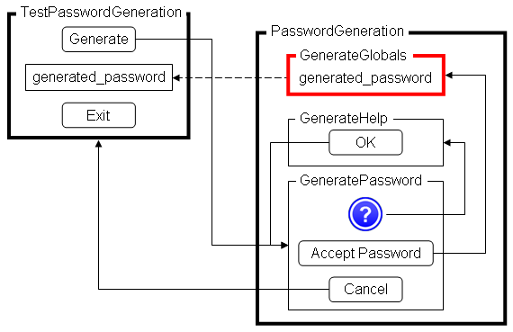

I was recently working on a WinForm application that
I researched the internet for a password generator and found nothing to my liking. So I decided to roll my own. This article describes the resulting product.
I needed a form, in this case a WinForm, that would allow users and administrators to generate passwords. The results took on the appearance of the form to the left.
If readers note a resemblance to the LastPass [^] Generate Secure Password tool, they would be right, since that tool formed the basis for the design of the Generate Password tool, presented here.
I approached LastPass to determine if they had, or were planning to have, a password generating API. I was advised that the idea was in their features list.
During design, I realized that I needed three components: a password generator, a means to compute the strength of the password, and a means of inter-form communication.
I found a password generator in kitsu.eb's answer in Generating Random Passwords [^]. Modifications were required to honor the user's choices to
The default character classes are:
const string DIGITS = "0123456789";
const string LOWERCASE = "abcdefghijklmnopqrstuvwxyz";
const string SPECIAL = @"!@#$%^&*()+=~[:'<>?,.|";
const string UPPERCASE = "ABCDEFGHIJKLMNOPQRSTUVWXYZ";

The first step in generating a new password is to modify copies of the default character sets so as to reflect user desires and then to populate a computationally efficient data structure to support the actual password generation. The create_character_sets method performs these functions.
If a particular character set is desired (as a result of the user choosing one or more of the "Characters to Include" checkboxes), the default character set is placed into a copy of the default character set; if not chosen, the copy is set to the empty string.
The user's further restrictions are then applied. In the tool, there are three restrictions.
When the user's restrictions have been applied, non zero-length copies are added to the character_sets List.
List < string > character_sets = new List < string > ( );
If a copy has a length of zero that character class will not participate in the password generation and its copy will not be added to the character_sets List. If the copy has been modified by the user applying restrictions, then that reduced character class will be added to the character_sets List.
// ************************************* create_character_sets
/// <summary>
/// creates a data structure that will contain the character
/// classes that will take part in password generation
/// </summary>
/// <param name="all_characters">
/// use any character combination in the password
/// </param>
/// <param name="easy_to_read">
/// avoid ambiguous characters in the password
/// </param>
/// <param name="easy_to_say">
/// avoid numbers and special characters in the password
/// </param>
/// <param name="lower_case">
/// include lowercase characters in the password
/// </param>
/// <param name="numbers">
/// include numeric characters in the password
/// </param>
/// <param name="symbols">
/// include special characters in the password
/// </param>
/// <param name="upper_case">
/// include uppercase characters in the password
/// </param>
/// <returns>
/// a list of strings containing character classes that are to
/// be used to generate a password
/// </returns>
List < string > create_character_sets ( bool all_characters,
bool easy_to_read,
bool easy_to_say,
bool lower_case,
bool numbers,
bool symbols,
bool upper_case )
{
string digits = String.Empty;;
List < string > list = new List < string > ( );
string lowercase = String.Empty;
string special = String.Empty;
string uppercase = String.Empty;
if ( numbers ) // does user want digits?
{
digits = DIGITS;
}
if ( lower_case ) // does user want lowercase?
{
lowercase = LOWERCASE;
}
if ( symbols ) // does user want symbols?
{
special = SPECIAL;
}
if ( upper_case ) // does user want uppercase?
{
uppercase = UPPERCASE;
}
// all_characters need not be
// tested because if it was
// true, no changes would be
// made
if ( easy_to_say )
{
digits = String.Empty;
special = String.Empty;
}
else if ( easy_to_read )
{
// remove the ambiguous
// characters 01OIoli!|
if ( !String.IsNullOrEmpty ( digits ) )
{
digits = digits.Replace ( "0", String.Empty ).
Replace ( "1", String.Empty );
}
if ( !String.IsNullOrEmpty ( uppercase ) )
{
uppercase = uppercase.
Replace ( "O", String.Empty ).
Replace ( "I", String.Empty );
}
if ( !String.IsNullOrEmpty ( lowercase ) )
{
lowercase = lowercase.
Replace ( "o", String.Empty ).
Replace ( "l", String.Empty ).
Replace ( "i", String.Empty );
}
if ( !String.IsNullOrEmpty ( special ) )
{
special = special.Replace ( "!", String.Empty ).
Replace ( "|", String.Empty );
}
}
// generate a computationally
// efficient data structure
list.Clear ( );
// if a character class' copy
// has a non-zero length, add
// it to the List
if ( uppercase.Length > 0 )
{
list.Add ( uppercase );
}
if ( lowercase.Length > 0 )
{
list.Add ( lowercase );
}
if ( digits.Length > 0 )
{
list.Add ( digits );
}
if ( special.Length > 0 )
{
list.Add ( special );
}
return ( list );
} // create_character_sets
With the character classes revised, the actual password generation can commence. Note that, in addition to the user-specified characters to be used, password generation depends upon the user-specified desired length. generate_password is the method that actually generates the password.
Modifications to the source algorithm were needed to make it responsive to user choices. The original algorithm created passwords that were made up of upper- and lower-case letters, digits, and special characters. Although quite acceptable, this approach could not honor a set of user choices.
The major change was to incorporate the character_sets data structure. The structure was passed to generate_password as a parameter. Recall that the character_sets strucure contains only those character classes that should participate in the generation of a password.
// ***************************************** generate_password
/// <summary>
/// generate a cryptographically strong password of the
// desired length using the specified character sets
/// </summary>
/// <param name="character_sets">
/// List < string > containing one or more characters sets
/// that are to be used to generate the password
/// </param>
/// <param name="desired_length">
/// desired length of the password
/// </param>
/// <returns>
/// string containing a cryptographically strong password
/// </returns>
string generate_password ( List < string > character_sets,
int desired_length )
{
byte [ ] bytes;
string characters;
int index = -1;
StringBuilder sb = new StringBuilder ( );
// get a cryptographically
// strong sequence of random
// bytes
bytes = new byte [ desired_length ];
new RNGCryptoServiceProvider ( ).GetBytes ( bytes );
foreach ( byte b in bytes )
{
// randomly select a character
// class for each byte
index = random.Next ( character_sets.Count );
characters = character_sets [ index ];
// use mod to project byte b
// into the correct range
sb.Append ( characters [ b % characters.Length ] );
}
return ( sb.ToString ( ) );
} // generate_password
In generate_password, the variable random was previously declared globally as:
using System;
:
:
private readonly static Random random = new Random ( );
and RNGCryptoServiceProvider was instantiated by
using System.Security.Cryptography;
The unnecessary variable characters contains an intermediate result for readability. I believe the alternative code is unintelligible.
I searched the internet for a method that determined the strength of a password. The one that I found to be most intelligent was Password Strength Control [^]. Major modifications were required. The author had included a DataTable that was apparently used for debugging and statistical support. The DataTable and all references to it were removed.
Since the algorithm must examine each character in the generated password, some attention was given to the efficiency of statements within the loop. As a result, the code to the left was replaced by the code to the right.
if (Char.IsDigit(ch)) if ( Char.IsDigit ( current_character ) )
{ {
iDigit++; digit_count++;
current_type = Types.DIGIT;
if (ConsecutiveMode == 3) }
iConsecutiveDigit++;
ConsecutiveMode = 3;
}
This change was made for all character sets (uppercase, lowercase, and special).
To differentiate between character types, an enum defining the types and an array to contain the counts of consecutive types were declared. Then the array was initialized.
enum Types
{
NOT_SPECIFIED,
SYMBOL,
DIGIT,
UPPERCASE,
LOWERCASE,
NUMBER_TYPES
}
:
:
int [ ] consecutives;
:
:
consecutives = new int [ ( int ) Types.NUMBER_TYPES ];
for ( int i = ( int ) Types.NOT_SPECIFIED;
( i < ( int ) Types.NUMBER_TYPES );
i++ )
{
consecutives [ i ] = 0;
}
This allowed the following statements:
if ( current_type == prior_type )
{
types [ ( int ) current_type ]++;
}
prior_type = current_type;
effectively eliminating a significant amount of code. Various other tests were performed finally yielding a password strength method.
Lastly, the test for digits or symbols in the middle of the password was eliminated.
// ***************************************** password_strength
/// <summary>
/// Determines how strong a password is based on different
/// criteria; 0 is very weak and 100 is very strong
///
/// Concept from
///
/// https://www.codeproject.com/script/Articles/
/// ViewDownloads.aspx?aid=59186
///
/// which has been significantly modified
/// </summary>
/// <param name="password">
/// string containing the password whose strength is to be
/// determined
/// </param>
/// <returns>
/// integer containing the strength of the password; in the
/// range [ 0 - 100 ]
/// </returns>
int password_strength ( string password )
{
int [ ] consecutives;
Types current_type = Types.NOT_SPECIFIED;
int digit_count = 0;
int lowercase_count = 0;
int password_length = password.Length;
Types prior_type = Types.NOT_SPECIFIED;
Hashtable repeated = new Hashtable();
int repeated_count = 0;
int requirments = 0;
int running_score = 0;
int sequential_alphabetic_count = 0;
int sequential_number_count = 0;
int symbol_count = 0;
int uppercase_count = 0;
consecutives = new int [ ( int ) Types.NUMBER_TYPES ];
for ( int i = ( int ) Types.NOT_SPECIFIED;
( i < ( int ) Types.NUMBER_TYPES );
i++ )
{
consecutives [ i ] = 0;
}
// scan password
foreach ( char current_character in password.
ToCharArray ( ) )
{
// count digits
if ( Char.IsDigit ( current_character ) )
{
digit_count++;
current_type = Types.DIGIT;
}
// count uppercase characters
else if ( Char.IsUpper ( current_character ) )
{
uppercase_count++;
current_type = Types.UPPERCASE;
}
// count lowercase characters
else if ( Char.IsLower ( current_character ) )
{
lowercase_count++;
current_type = Types.LOWERCASE;
}
// count symbols
else if ( Char.IsSymbol ( current_character ) ||
Char.IsPunctuation ( current_character ) )
{
symbol_count++;
current_type = Types.SYMBOL;
}
if ( current_type == prior_type )
{
consecutives [ ( int ) current_type ]++;
}
prior_type = current_type;
// count repeated letters
if ( Char.IsLetter ( current_character ) )
{
if ( repeated.Contains ( Char.ToLower (
current_character ) ) )
{
repeated_count++;
}
else
{
repeated.Add ( Char.ToLower (
current_character ),
0 );
}
}
}
// check for sequential alpha
// string patterns (forward
// and reverse)
for ( int i = 0; ( i < 23 ); i++ )
{
string forward = LOWERCASE.Substring ( i, 3 );
string reverse = reverse_string ( forward );
if ( ( password.ToLower ( ).
IndexOf ( forward ) != -1 ) ||
( password.ToLower ( ).
IndexOf ( reverse ) != -1 ) )
{
sequential_alphabetic_count++;
}
}
for ( int i = 0; ( i < 8 ); i++)
{
string forward = DIGITS.Substring ( i, 3 );
string reverse = reverse_string ( forward );
if ( ( password.ToLower ( ).
IndexOf ( forward ) != -1 ) ||
( password.ToLower ( ).
IndexOf ( reverse ) != -1 ) )
{
sequential_number_count++;
}
}
// ADDITIONS TO STRENGTH
running_score = ( ( 4 * password_length ) +
( 2 * ( password_length -
uppercase_count ) ) +
( 2 * ( password_length -
lowercase_count ) ) +
( 4 * digit_count ) +
( 6 * symbol_count ) );
// requirments
requirments = 0;
if ( password_length >=
MINIMUM_PASSWORD_CHARACTERS )
{
requirments++;
}
if ( uppercase_count > 0 )
{
requirments++;
}
if ( lowercase_count > 0 )
{
requirments++;
}
if ( digit_count > 0 )
{
requirments++;
}
if ( symbol_count > 0 )
{
requirments++;
}
if ( requirments > 3 )
{
running_score += ( 2 * requirments );
}
// DEDUCTIONS FROM STRENGTH
// if only letters
if ( ( digit_count == 0 ) && ( symbol_count == 0 ) )
{
running_score -= password_length;
}
// if only digits
if ( digit_count == password_length )
{
running_score -= password_length;
}
// if repeated letters
if ( repeated_count > 1 )
{
running_score -= ( repeated_count *
( repeated_count - 1 ) );
}
for ( int i = 0; ( i < ( int ) Types.NUMBER_TYPES ); i++ )
{
running_score -= ( 2 * consecutives [ i ] );
}
running_score -= sequential_alphabetic_count;
running_score -= sequential_number_count;
// confine result to range
if ( running_score > 100 )
{
running_score = 100;
}
else if ( running_score < 0 )
{
running_score = 0;
}
return ( running_score );
} // password_strength
Parts of the GeneratePassword.cs are specifically designed to provide a user interface for the tool. I have isolated the invocations of various methods to the regenerate_password. This method is a wrapper around the invocations of the other methods used to populate the user interface.
// *************************************** regenerate_password
/// <summary>
/// regenerate_password is a wrapper around the three major
/// password generation calculate and display methods:
///
/// create_character_sets
/// generate_password
/// password_strength
///
/// in addition it places the generated password into the
/// globally known class named GenerateGlobals
/// </summary>
void regenerate_password ( )
{
List < string > character_sets = new List < string > ( );
string generated_password = String.Empty;
int strength = 0;
character_sets = create_character_sets ( all_characters,
easy_to_read,
easy_to_say,
lower_case,
numbers,
symbols,
upper_case );
generated_password = generate_password ( character_sets,
desired_length );
strength = password_strength ( generated_password );
password_strength_PB.Value = strength;
strength_LAB.Text = strength_in_words ( strength );
GG.generated_password = generated_password;
generated_password_TB.Clear ( );
generated_password_TB.Text = generated_password;
} // regenerate_password
There are a number of ways by which a form can communicate values to another form:
I decided a to implement communication through a globally known class named GenerateGlobals. The using alias directive [^] used in both the Generate Password tool and its invoking form might be:
using GG = PasswordGeneration.GenerateGlobals;
The PasswordGeneration namespace directory is:

PasswordGeneration
GenerateGlobals
GenerateHelp
GeneratePassword
generate_help_text
generate_icon
generate_image
help_image
regenerate_image
RichTextBoxExtensions
TransparentLabel
As shown towards the end of regenerate_password, the value of the newly generated password is placed into generated_password in the GenerateGlobals class. Any form that instantiated the Generated Password form, can retrieve it from there.
To test the Generate Password tool, a harness was developed named TestPasswordGeneration. Its purposes were to trigger the Generate Password tool and display the password that was acceptable to the user.
Because communication between forms was required, I used the global class named GenerateGlobals.
The following code causes the form to appear and then optionally display the newly generated password. It is the event handler for the Generate button Click event.
generate_password_form = new PasswordGeneration.GeneratePassword ( );
if ( ( ( PasswordGeneration.GeneratePassword )
generate_password_form ).initialize_form ( ) )
{
// use modal (ShowDialog) so
// that the generated password
// can be captured
generate_password_form.ShowDialog ( );
if ( !String.IsNullOrEmpty ( GG.generated_password ) )
{
generated_password = GG.generated_password;
generated_password_TB.Clear ( );
generated_password_TB.Text = generated_password;
generated_password_TB.Visible = true;
}
}
I have presented a WinForm that allows developers to provide administrators and users with the ability to generate passwords. I am considering developing the same functionality for WebForms.
The Generate Password tool was developed in the following environment:
| Microsoft Windows 7 Professional SP 1 |
| Microsoft Visual Studio 2008 Professional SP1 |
| Microsoft Visual C# 2008 |
| Microsoft .Net Framework Version 3.5 SP1 |
| Microsoft Office PowerPoint 2003 |
| 09/20/2019 | Original article |